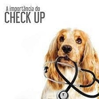

Vacinação
As vacinas são essenciais para a saúde dos nossos bichinhos. O melhor é que as primeiras doses sejam dadas desde cedo, a partir dos 45 dias de vida. O veterinário vai montar um calendário com as principais vacinas, que deve ser seguido ao longo de toda a vida do pet, incluindo as doses e reforços anuais. Para os cachorros, as principais vacinas são a de raiva, giárdia, gripe e a múltipla, que protege contra diversas doenças importantes, como por exemplo a cinomose e a parvovirose. Os anticorpos maternos, presentes no filhote, podem inativar os agentes vacinais nos primeiros meses de vida, por isso é imprescindível que realize o reforço vacinal seguindo criteriosamente o que o veterinário indica. Caso após uma dose de vacina seu pet ficar mais amuadinho, não se preocupe! É normal que ele fique sensível nas primeiras 48 horas, assim como em bebês humanos pós-vacinação. Já se ele apresentar inchaços, coceiras e outros sintomas diferentes, procure imediatamente assistência veterinária. Pode ser que ele esteja tendo uma reação alérgica.
Castração
É uma medida preventiva muito importante para a saúde do seu pet que diminui o risco de diversas doenças ligadas aos hormônios sexuais como alguns tipos de câncer e alterações comportamentais. Para isso, o melhor é que seja feita após atingir maturidade sexual. Apesar dos riscos ligados à anestesia, a castração é um procedimento rápido e seguro. Mas é importante que seja feita por um veterinário confiável e especializado em cirurgia e um especialista em anestesiologia, além de uma equipe de internação pós-cirúrgica.
Check-up
Quando levar meu pet para um check-up no veterinário? A frequência com que nossos bichinhos devem ir ao veterinário é a mesma com que nós devemos fazer check-ups com nossos médicos. Essa regularidade permite que os veterinários consigam perceber as primeiras alterações que podem levar seu pet a desenvolver doenças. Dessa forma, é possível agir rapidamente, antecipando ou evitando o surgimento de problemas, tratando-os de maneira mais fácil e com menos sofrimento ao bichinho. Os principais exames solicitados durante um check-up são o hemograma, exame de urina, exame de glicemia, eletrocardiograma e os exames de função renal e hepática.